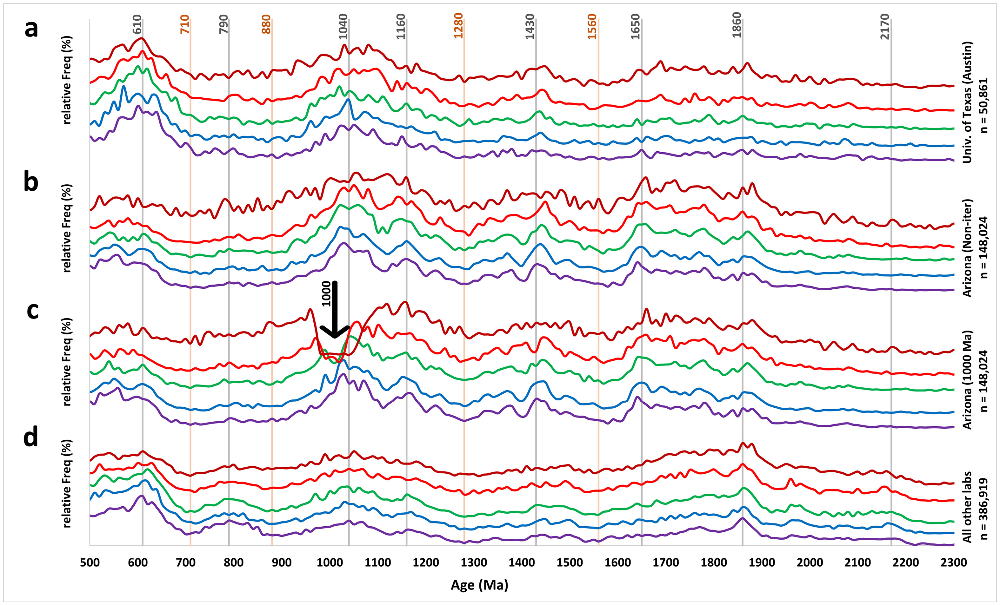

Anayses from a validated global U-Pb detrital zircon database: Enhanced methods for filtering discordant U-Pb zircon analyses and optimizing crystallization age estimates

Resumo em Português
A determinação da "melhor idade" de grãos individuais a partir de análises U-Pb em zircão detrítico permanece problemática, com o sistema atual geralmente se baseando em uma idade de corte arbitrária para determinar quando alternar entre idades ²⁰⁶Pb/²³⁸U e ²⁰⁷Pb/²⁰⁶Pb. Recentemente, alguns pesquisadores verificaram que as idades concórdia de grão único calculadas iterativamente pelo IsoplotR fornecem estimativas com maior precisão e passaram a utilizá-las como idades preferenciais. Neste trabalho, compilamos um novo banco de dados global de zircão detrítico com 604.553 registros contendo razões U-Pb, idades, incertezas, configurações de laboratório, entre outras variáveis.O novo banco de dados fornece uma base para investigar quatro modelos de melhor idade do ponto de vista da acurácia: (1) corte em 1700 Ma para melhor idade; (2) corte em 1000 Ma para melhor idade; (3) idades concórdia de grão único calculadas iterativamente pelo IsoplotR; e (4) um novo modelo não iterativo desenvolvido pela comparação de idades U-Pb de padrões de zircão datados por ID-TIMS e LA-ICP-MS. Todas as análises foram classificadas por seu grau de concordância e as distribuições de idade não ponderadas foram calculadas. As distribuições de idade são praticamente idênticas para todos os modelos quando análises altamente concordantes são utilizadas. No entanto, à medida que a discordância aumenta, os modelos com cortes arbitrários produzem distribuições de idade com depressões artificiais na idade de corte.Após segregar os registros do banco de dados em cinco classes de concordância, as análises de correlação cruzada mostram que as cinco distribuições de idade baseadas em classes não iterativas estão mais alinhadas e correlacionadas do que aquelas dos demais modelos de idade. Os resultados suportam um modelo de distribuição cumulativa que define uma transição gradual entre os geocronômetros opostos ao longo de um intervalo de ~1200 Ma, principalmente abrangendo o período entre 1600 Ma e 400 Ma. Um modelo suplementar é também desenvolvido para fornecer aos geocronologistas um meio de validar dados U-Pb, calcular as novas classificações de concordância e calcular idades não iterativas.